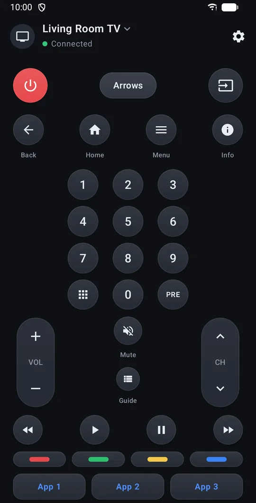
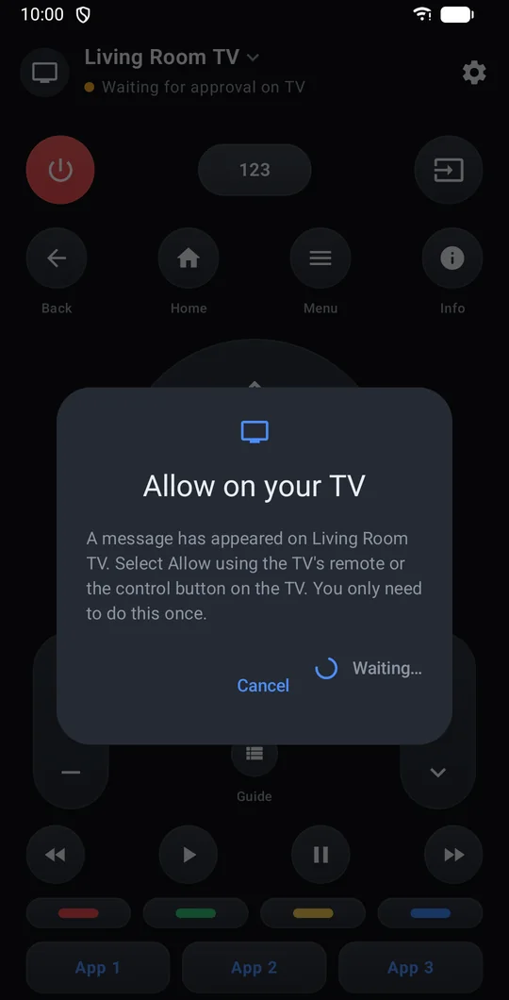
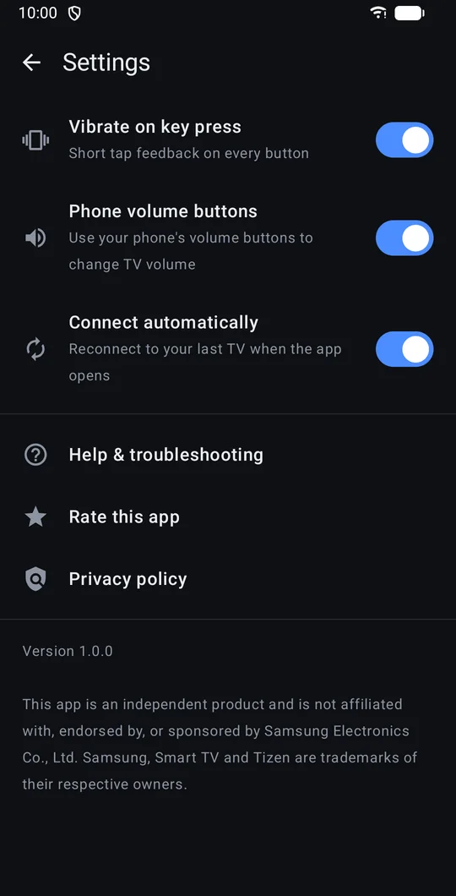
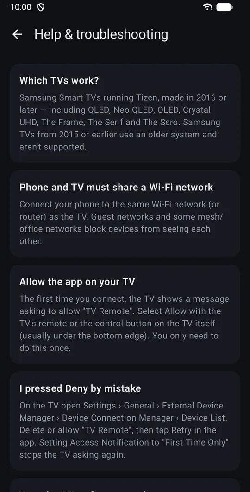

Ampliply/Apps/TV Remote for Samsung Smart TV
TV Remote for Samsung Smart TV
Lost the remote again? Batteries dead? Your Android phone becomes a fast, complete remote for your Samsung Smart TV over your home Wi‑Fi — so your phone does not need an infrared blaster.
A look at it
Every button on the plastic remote, laid out for a thumb.




The whole remote, nothing missing
All the keys
- Power on and off
- Volume, mute — or use your phone’s own volume buttons
- Channel up and down, number pad, channel list, previous channel
- Arrow pad with OK, Back, Home, Menu, Info, Guide
- Source and input switching for HDMI, AV and the rest
- Play, pause, rewind, fast‑forward
- Red, green, yellow and blue colour keys
Made to be easy
- Finds your TV automatically on your Wi‑Fi
- Or type the TV’s IP address in by hand
- Reconnects to your last TV as the app opens
- Save several TVs, switch in a tap
- Press and hold volume, channel or arrows to repeat
- Light haptic tap on every press, switchable
- Built‑in help with the exact TV menu paths
One-tap streaming
- Shortcuts that open your streaming apps straight on the TV
- Wake‑on‑LAN power‑on, so the TV comes up from standby
- Automatic reconnect when the TV drops off the network
- No account, no sign‑in, no profile
Three steps, once
Same network
Put your phone and your TV on the same Wi‑Fi network. Guest networks usually block devices from seeing each other.
Open the app
Let it find your TV, or enter the TV’s IP address yourself if you prefer.
Allow it on the TV
The first time only, your TV asks to allow “TV Remote”. Choose Allow with the TV’s own remote or the button on the set.
Samsung Smart TVs running Tizen, 2016 and newer
That covers QLED, Neo QLED, OLED, Crystal UHD, The Frame, The Serif and The Sero.
Samsung sets from 2015 and earlier use an older control system and are not supported. Because the app does not use an infrared blaster, it cannot control non‑smart televisions or set‑top boxes.
If your TV does not appear
- Check both devices are on the same network — not one on 2.4 GHz guest and one on 5 GHz.
- Some mesh and office networks isolate clients; turn off AP isolation or client isolation.
- Wake the TV first. A fully powered‑down set may not answer discovery.
- Still nothing? Enter the TV’s IP address by hand — it is in the TV’s own network settings.
Your button presses stay in your house
Commands travel from your phone straight to your TV across your local network. They never pass through our servers, because we do not run any. There is no account and no sign‑in. The TVs you save — their names, addresses and pairing tokens — are stored only on your phone and are deleted when you tap Forget or uninstall the app.
The app is free and shows Google AdMob ads, and the Google Mobile Ads SDK processes an advertising ID, device information and ad interactions to serve and measure them.
Questions
Do I need Wi-Fi, or will mobile data do?
Wi‑Fi. The app talks to your TV directly over your local network, so both devices have to be on the same one. Mobile data cannot reach your television.
Does my phone need an IR blaster?
No — and that is the point. Almost no modern Android phone has one. This app uses your network instead, which is also why it can switch inputs and launch apps, things an infrared remote cannot do reliably.
Can it control my set-top box or soundbar?
Not directly. It speaks the Samsung Smart TV protocol only. Devices plugged into the TV can often still be driven through the TV’s own HDMI‑CEC controls.
Is this an official Samsung app?
No. It is an independent app from Ampliply, built to work with Samsung televisions. See the note at the bottom of this page.
Can I remove the ads?
There is no paid tier today. Ads keep the app free, and they are paced so they never interrupt you mid‑press: never over pairing, dialogs, settings or help, and never two full‑screen ads close together.
Does the app know what I am watching?
No. It sends key presses and reads whether the TV is reachable. It does not collect, store or send anywhere what is on screen, which channel you are on or which apps you open.
Trademark notice. This app is not an official Samsung application. It is not affiliated with, endorsed by or sponsored by Samsung Electronics Co., Ltd. Samsung, Smart TV and Tizen are trademarks of Samsung Electronics Co., Ltd., used here only to describe which televisions the app works with.
Also from Ampliply
Unplug: Auto Offline pauses your phone’s internet a few minutes after you lock it, so notifications stop pulling you back.